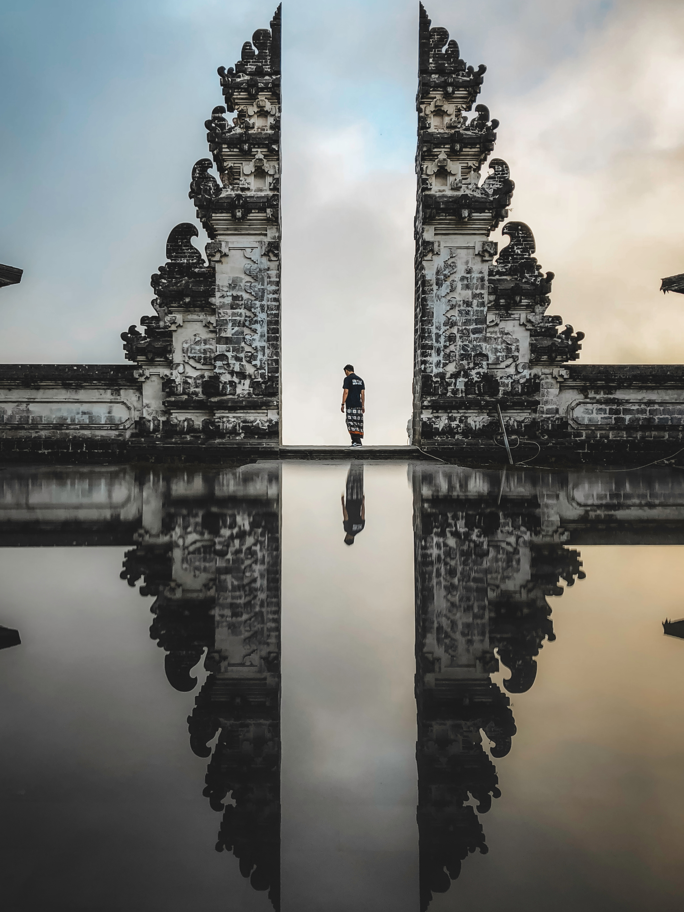

Pura Penataran Agung Lempuyang
Balinese Hindu temple that is considered as one of the highly regarded temples of Bali.
Tirta Gangga
A water palace in Bali that is a maze of pools and fountains, surrounded by beautifully kept gardens and many stone carvings and statues.

Tanah Lot
Tanah Lot Temple is one of Bali's most important landmarks, which is famed for its unique offshore setting and sunset backdrops.